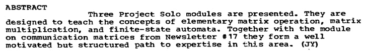
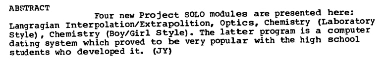
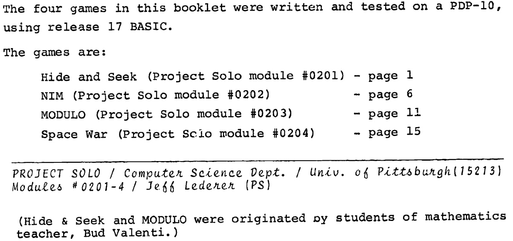
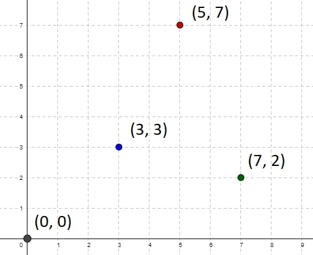
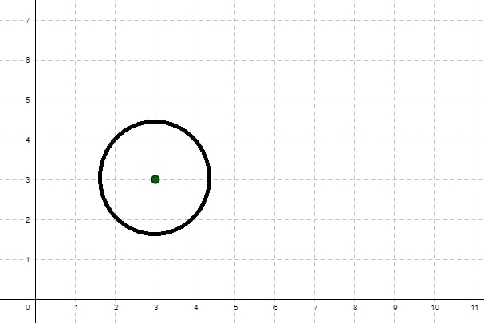
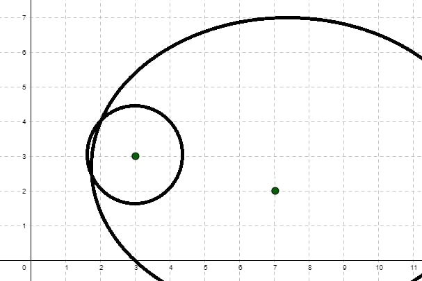
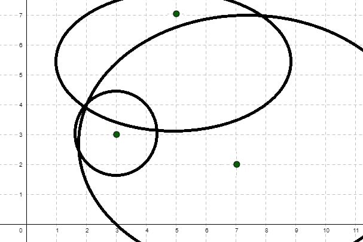

A Solo Approach to People's Computing
An initiative and experimental program called Project Solo (sometimes written as "SOLO"), launched in 1970 by Thomas Dwyer, involved a collective effort over time around "researching and testing the potential of computers for the range of subjects found in large urban school systems."
This project, one of the many aligned with educational computing, also provides an exciting start to a history that focuses on a path from mathematical games to topographical navigation games to adventure games.
Starting Project Solo
Project Solo was initially formed as part of the Special Interest Group on Computer Uses in Education (SIGCUE) within the Association for Computing Machinery (ACM).
SIGCUE was an offshoot of the Special Interest Group on Computer Science Education (SIGCSE), founded in 1969. You can read a history post about the organization as well as read some of the founding documents.
Dwyer published the inception document for the project in the society's newsletter Interface (Volume 4, Issue 1) in February 1970. You can see this full document as "Project Solo: A Statement of Position Regarding CAI and Creativity", where "CAI" refers to "Computer-Assisted Instruction." A core part of the project's focus is stated right at the document's start.
Primary emphasis is being placed on the importance of each student as a creative person who can learn to use the computer as an exploratory tool.
A bit later, in issue 23 of the project's newsletter from November 1972, the project's description resurfaced concisely.
Project Solo is an experimental program concerned with exploring the potential of computers in the hands of high school teachers and students. The project tested its ideas during 1970-72 in three large public schools in Pittsburgh where several hundred students learned to use computers in "solo" mode.
That last bit of wording is important. Dwyer characterized educational programming as having two modes: dual and solo. The "Project Solo" name was meant to reference the transition of a pilot learning to fly, going from "dual flying" with an instructor to "solo flying" alone. However, as the inception document states:
It is important to notice that SOLO implies more than "student alone." It means that the student must make his way on his own, but within a highly structured, well-prepared environment.
In Dwyer's scheme, the computer would serve as the enabling "system" that allowed a "solo mode" to occur. Here, the student would not be working with the guided attention of a teacher ("dual mode") but instead exploring on their own in the context of a constrained system.
I strongly encourage reading this brief inception document. It sheds light on the initial goals set by educators and underscores the regrettable distance we've traveled from those aspirations.
At the end of 1973, Project Solo transformed and reemerged as Solo Works (sometimes written as 'Soloworks'). The new project, officially titled "A Computer-Based High School Mathematics Laboratory,' described itself in the previously mentioned issue 23 as follows:
Soloworks is officially a project to develop new approaches to high school mathematics education.
In that same issue, the project further elucidates its objectives with the following description:
'Soloworks' is also a statement of philosophy, affirming our belief that any student can be brought into the world of solo-mode learning by an intelligent use of technology.
The project focus ultimately saw a future where it could augment the computing world by considering different interfaces.

One such idea, as shown in the above visual, was that of a lunar lander that might present an actual visual user interface but, behind the scenes, is driven by a series of mathematical calculations. The mathematical underpinning of this was still quite crucial. The project now focused on the "critical transitional period in math education."
Skipping ahead even further, issue 26 of the newsletter, from April 1974, reprinted an article called "Heuristic Strategies for Using Computers to Enrich Education." This article also appeared in the International Journal for Man-Machine Studies. This article summarizes a lot of Project Solo as it led into Solo Works, and, in particular, there's a focus on how "certain aspects of computing are directly related to a deep view of education."
The idea of "student-controlled computing" was, I believe, a significant influence on the concept of "people's computing," even though such a term was not necessarily in use at the time.
Preliminaries to Project Solo
I ended the last section with a paper from near the end of the project's historical focus. Let's consider a few sources showing how all this evolved from its earliest days after its inception.
Project Solo: Paper 1
The first paper we can consider is another by Thomas Dwyer. Keep in mind our chronology here as we're stepping back in time. The paper I'm referring to follows from Dwyer's 1970 inception document. The paper in question was called "Some Principles for the Human Use of Computers in Education," first published in early 1970 (ERIC Source).
The version I link to here is a reprint of that paper from the International Journal of Man-Machine Studies (volume 3, issue 3), published in July of 1971.
In this paper, Dwyer reinforces the dual/solo modes of interaction:
While it is clear that dual instruction involving close guidance by a teacher is essential (one does not recommend that a student immediately go out in an airplane and "do his own thing"), it is equally clear that the student will optimise his benefits from the dual mode if he knows he is preparing for a solo flight. He knows, in fact, that he can eventually exert more influence on his learning than his instructor.
I think that a significant point from this paper is the following:
One of the most interesting uses of computers we have employed in our high school work involves the creation of tutorial, review, gaming and simulation programs by students (not teachers) for the improvement and individualization of various courses.
The emphasis there is mine. The idea of games and simulations was important as it was a way to engage students. In fact, in issue 8 of the newsletter, from January 1971, we can see an example of how learning-as-a-game occurred.

Further, in issue 22 of the newsletter, from June 1972, we read the following:
Distinctions can be made between games and simulations, although the programs students write in these areas often combine both concepts. The real fun begins when students modify, or better yet create the programs behind simulations and games. For this reason, we believe that listings of such programs should always be furnished to students.
Thus, you have to imagine a whole generation of young people growing up, encountering the idea that computers could engage them in something enjoyable or, at the very least, interesting.
The paper notes, "the student's work along these lines can very well be superior to the teacher-constructed programs." Indeed, you can imagine that was the case with the games and simulations as students learned to stretch their imaginations.
Project Solo: Paper 2
Another paper, following the above, was "Teacher-Student Authored CAI Using the NEWBASIC/CATALYST System", published in early 1970 (ERIC Source). This paper was reprinted in the Communications of the ACM (volume 15, issue 1) published in January of 1972.
This paper puts a particular emphasis on the "solo mode" that gave the project its name:
We would classify the writing, debugging, and revision of an original BASIC program by a student as SOLO mode, since the programs with which he interacts (e.g. the BASIC compiler and library routines) are not pedagogically intended. We also consider a student who authors a CAI program such as a simulation or a tutorial to be in SOLO mode.
What's quite clear here is not just the emphasis on BASIC, which any history of people's computing must involve quite a bit, but also this focus on students interacting with existing programs and — crucially! — with students creating their own programs. The paper reflects this aspect as well:
After working with another person's tutorial or simulation (preferably his own teacher's), the student wants to know how it worked. It has become clear to us that this question should always be answerable, and within the context of the same system that generated the initial curiosity.
This statement says students will want to take apart those BASIC programs to understand how they work. Indeed, in the context of gaming and simulation history, this is exactly how variations on game ideas and concepts proliferated. If you could take apart something and see how it worked, it would be a short step to see how to create own your particular variation.
It's interesting to note that there was concern about this approach in one context. In issue 19 of the Project Solo newsletter (from October 1971), we read:
The basic approach of Project Solo has been to emphasize the use of computers as tools which support both teacher and student in their learning activity. It has been our experience, however, that the truly inquisitive mind always wants to know about the tool as well as its use. When the tool is something as complex as a computer, the answers to such questions cannot be given in a few words.
This statement indicates that the students will want to learn as much about how the computer works, and thus more broadly about computing in general, than just how to create a program that can run on the computer. Yet, a previous issue — specifically, issue 11 (from February 1971) — framed the problem differently:
Our recent experience indicates that there is a lot of potential for getting youngsters in the 9th, 8th, (or sometimes 7th) grade excited about exploring the world of learning with computers. The potential is magnified several times when the student controls the full power of the computer; when it is used by him, not on him. This means that we must provide the opportunity for these students to master control of the machine at an early age.
The idea behind this statement was the intersection of education and computing. And, as we've seen, games and simulations were a vital enabler of that for many students.
Project Solo: Paper 3
A final paper worth considering is "Primer for the NEWBASIC/CATALYST System," published in October 1970 (ERIC Source). This paper delves into the interaction with the system implemented in Project Solo. This context provides a technical understanding of how educators implemented the ideas outlined in the previous two papers, offering immense historical value.
Project Solo Modules
Now, let's jump back in time to a previous newsletter from those we've been looking at. Specifically, I want to focus on an address Dr. Richard Bellman provided in issue number 4 of the Project Solo newsletter from 16 October 1970. The address is called "Myopia, Cornucopia and Utopia."
This historically interesting newsletter shows some of the tension around computers and how they facilitated education. The paper notes that while this is "No. 4", a few other letters preceded this one. Those preceding sources are the ones I mentioned above.
Before moving on, I can't stress enough the critical context of Project Solo and how it envisioned and championed students' interactions with computing, particularly in the educational context. Issue 14 (March 1971) of the newsletter said:
A valuable aspect of solo mode computing is the off-line planning and analysis it invites, especially when these activities take place in concert with teachers and fellow students.
Likewise, issue 16 (May 1971) said:
The Project Solo philosophy does of course suggest that students gain deeper insights when they write their own programs.
Issue 15 (April 1971), in particular, gave a prescriptive idea of the project's overall approach, and it's worth quoting that here in full.
One of the activities proposed by Project Solo for 1971-72 is to create a syllabus and materials for a high school course in computer science. There are a number of reasons for introducing such a course, especially at the 9th grade level.
The article then goes on to list those various reasons.
- A reduction in the gap between the subject skills of an 11th or 12th grader, and his computing skills, by giving him early experience with computers.
- To involve 9th grade students in their education by preparing them to contribute to other classes they will take. They will make this contribution in the role of computer "analyst" for the teacher.
- To introduce the concepts, capabilities and limitations of our "computer age" to most students (possibly opening up careers for some of them).
- To preview various aspects of a high school education in such a way that students will become interested in working at their education in areas they might normally bypass.
It's worth noting that the issues of the various Project Solo newsletters always focus on modules. Issue 8 (January 1971) describes "modules" as follows:
In our present work we call a collection of educational materials which focus on a single topic, and which require use of an interactive computer terminal, a module.
These modules were programs, most of which were written in BASIC and mainly dealt with mathematics, but with a little of every subject thrown in. Here's an example of what was in issue 20 (from December 1971).

Here's another example of the material in issue 21 (January 1972).

Things get interesting if we look at issue 22 of the Project Solo newsletter from June 1972. You can read that whole issue, but I've narrowed that reference down to focus on some specific highlights. An interesting statement from that issue, which we have looked at already, reinforces what we read in the preliminary papers leading up to this point. Consider:
Distinctions can be made between games and simulations, although the programs students write in these areas often combine both concepts. The real fun begins when students modify, or better yet create the programs behind simulations and games.
This sentiment echoes what I said earlier: there was the ability to look at existing experiments and the impetus to create new experiments. Along those same lines:
The following programs were all written by students at Fox Chapel Area High School. These students wrote their programs with their fellow students' needs in mind. Each program is a tutorial aimed at helping younger learners master a new skill.
So that's another interesting concept. We have students creating programs that help other students learn. This approach is very similar to what Bob Albrecht was doing in another context, which intersects with this one in the lead-up to something called the People's Computer Center. This historical linkage is crucial because it shows that the same thinking permeated how young people could engage with computing. And particularly how a focus on games and simulations could enable this.
Speaking of that last point, I focus on issue 22 in particular because there's mention of "four computer games: hide-and-seek, NIM, MODULO, and space war."

The module I want to focus on here is Hide and Seek, also known as "Project Solo module #0201" as this will start us down an exciting path that shows some common threads as a particular style of game — adventure games — came on the scene. First, check out the Hide and Seek program listing, and then we can dig in.
Hide and Seek
As the game instructions print out, the goal is to "FIND THE FOUR PLAYERS WHO ARE HIDDEN ON A 10 BY 10 GRID." The game gives the player ten guesses to find these other players. It's worth noting that these are other fictional players, not actual game players. Those players are nothing more than point locations on a grid.
With each guess, the player picks a point on the grid, and then the program will indicate the distances to each hidden player. If the player's guess matches precisely the location of a hidden player, then they get credit for finding that "person."
The player doesn't see the grid displayed as part of the game, but the grid structure is the first, or top-right, quadrant of the Cartesian coordinate system, with the origin point (0,0) being on the lower left of the grid. Thus, all player guesses will be to the right and up from the origin.

An example playthrough might be instructive to walk through. Here is how things started in my playthrough:
TURN NUMBER 1 , WHAT IS YOUR GUESS?
? 3,3
YOUR DISTANCE FROM PLAYER 1 IS 1.4 UNIT(S).
YOUR DISTANCE FROM PLAYER 2 IS 6 UNIT(S).
YOUR DISTANCE FROM PLAYER 3 IS 5 UNIT(S).
YOUR DISTANCE FROM PLAYER 4 IS 3 UNIT(S).
Here, one of my hidden players (the first one) is 1.4 units away from the point I chose as a starting point: (3,3). One strategy that immediately suggests itself is to draw a circle of radius 1.4 with a center at (3,3).

This approach aligns well with geometric intuition and the concept of distance in Cartesian coordinates. By focusing on the area within this circle, you effectively narrow down the possible locations for Player 1, allowing you to adjust your subsequent guesses based on the feedback received from this initial move. So now I try my second guess:
TURN NUMBER 2 , WHAT IS YOUR GUESS?
? 7,2
YOUR DISTANCE FROM PLAYER 1 IS 5.3 UNIT(S).
YOUR DISTANCE FROM PLAYER 2 IS 8.6 UNIT(S).
YOUR DISTANCE FROM PLAYER 3 IS 2 UNIT(S).
YOUR DISTANCE FROM PLAYER 4 IS 5.6 UNIT(S).
At this point, the game responds that the first player is 5.3 units away from the point I tried: (7,2). So, employing the same strategy, I now draw a circle of radius 5.3 units away from (7,2).

By doing this, you're effectively narrowing down the potential location of Player 1 even further. The intersection between the circle drawn from your first guess and the circle drawn from your second guess should give you a smaller area where Player 1 is likely "hiding." This iterative approach of refining your search based on the distances obtained from each guess is a powerful way to zero in on the hidden players systematically. It demonstrates a thoughtful use of geometric principles to optimize the search process. Now I can try a third guess:
TURN NUMBER 3 , WHAT IS YOUR GUESS?
? 5,7
YOUR DISTANCE FROM PLAYER 1 IS 4.2 UNIT(S).
YOUR DISTANCE FROM PLAYER 2 IS 3.6 UNIT(S).
YOUR DISTANCE FROM PLAYER 3 IS 7.2 UNIT(S).
YOUR DISTANCE FROM PLAYER 4 IS 2.2 UNIT(S).
Now, the first player is said to be 4.2 units away from the point I tried: (5,7). I can thus draw a circle of radius 4.2 units away from (5,7).

If the mathematical strategy holds, where the three circles intersect must be where that player "hides." And sure enough, here's the output if I provide that intersection as my fourth guess:
TURN NUMBER 4 , WHAT IS YOUR GUESS?
? 2,4
YOU HAVE FOUND PLAYER 1
YOUR DISTANCE FROM PLAYER 2 IS 5 UNIT(S).
YOUR DISTANCE FROM PLAYER 3 IS 6.4 UNIT(S).
YOUR DISTANCE FROM PLAYER 4 IS 2.2 UNIT(S).
And there you go! We've found one of the hidden players.
With the approach looked at above for the gameplay, the player can leverage trilateration to pinpoint the likely location of Hidden Player 1. In trilateration, the point where three circles intersect is a strong candidate for the actual location because it satisfies the distance constraints from each guess. If you find the intersection point of the circles drawn from (3,3), (7,2), and (5,7), this point likely corresponds to the hiding place of Hidden Player 1.
The fact that, in the game, each guess provides information about the distances from the chosen point to all four hidden players is a crucial aspect that supports the soundness of the strategy. But you can also streamline it a bit as follows:
- Test the point at (0,0).
- Test the point at (9,0).
- Draw arcs from (0,0) with the four different distances.
- Draw arcs from (9,0) with the four different distances.
- Use four more turns to locate all the hidden players.
Let's break down that strategy.
- In steps 1 and 2, you're choosing points at the extremes of the grid. This approach is viable because testing these points provides information about potential player locations in the horizontal direction.
- In steps 3 and 4, you create areas where the hidden players must be located by drawing arcs from (0,0) and (9,0) with the distances obtained from these extreme points. The intersection points of these arcs become strong candidates for the hidden players' positions.
- Finally, in step 5, you use four additional turns to refine and confirm the locations of the hidden players, which can involve a trilateration-like strategy.
With this streamlined approach, you can generally find all the hidden players in six moves, which means the approach is an effective optimization, leveraging the information gained from extreme points to narrow the search area quickly. Let's consider an example of this approach.
TURN NUMBER 1 , WHAT IS YOUR GUESS?
? 0,0
YOUR DISTANCE FROM PLAYER 1 IS 3 UNIT(S).
YOUR DISTANCE FROM PLAYER 2 IS 8 UNIT(S).
YOUR DISTANCE FROM PLAYER 3 IS 5.5 UNIT(S).
YOUR DISTANCE FROM PLAYER 4 IS 6.2 UNIT(S).
There, we test the point at (0,0).
TURN NUMBER 2 , WHAT IS YOUR GUESS?
? 9,0
YOUR DISTANCE FROM PLAYER 1 IS 6.5 UNIT(S).
YOUR DISTANCE FROM PLAYER 2 IS 2.5 UNIT(S).
YOUR DISTANCE FROM PLAYER 3 IS 8.8 UNIT(S).
YOUR DISTANCE FROM PLAYER 4 IS 9.1 UNIT(S).
There, we test the point at (9,0). Then, based on the obtained distances, you would have to draw the arcs from (0,0) and (9,0). Let's consider how we would do that.
- Drawing Arcs from (0,0):
- Arc with radius 3 centered at (0,0)
- Arc with radius 8 centered at (0,0)
- Arc with radius 5.5 centered at (0,0)
- Arc with radius 6.2 centered at (0,0)
- Drawing Arcs from (9,0):
- Arc with radius 6.5 centered at (9,0)
- Arc with radius 2.5 centered at (9,0)
- Arc with radius 8.8 centered at (9,0)
- Arc with radius 9.1 centered at (9,0)
Now, let's identify the intersection points of these arcs, which will likely be the hidden player locations.
- The intersection of arcs from (0,0) suggests a potential location for Player 1.
- The intersection of arcs from (9,0) suggests a potential location for Player 2.
With these potential locations identified, you can now use four additional turns to refine and confirm the positions of Players 1 and 2 and discover the locations of Players 3 and 4. I won't play all that out here, but I hope you can see how the overall strategy works.
The Idea of Variants
One thing that will come up in my history of early ludic experiences is the idea of variants. This concept means a programmer reworks an existing program, either a lot or a little, to create a variant implementation.
While no student created a variant of the Hide and Seek game in the immediate time frame, at least so far as we know, we can easily imagine a variant. In our hypothetical variant, the game could provide a list of distances to the four hidden players without specifying which distance corresponds to each player. That approach would add an extra layer of complexity and challenge, increasing the difficulty of the game because players would no longer receive explicit information about the identity of each hidden player with each guess. Instead, players would have to infer the associations between the distances and the individual hidden players.
With this approach, players would need to develop more sophisticated strategies to infer the relationships between distances and hidden players. That would require more careful analysis and deduction than with the original game. Let's consider a few examples of what that would mean.
With this approach, keeping track of the distances from each previous turn would become crucial. Recognizing patterns in the changes in distances would aid the player in making informed decisions in subsequent turns. With each turn, players could iteratively refine their understanding of the hidden players' locations based on the evolving list of distances. This iterative inference process would add some depth to the gameplay. The absence of direct feedback about the identity of the hidden players would also challenge the player to rely on indirect clues and logical deductions, which would encourage a more strategic and deductive approach. Finally, the trilateration approach mentioned earlier would become more challenging since the distances would have to be associated with specific hidden players, adding complexity to the geometric reasoning in narrowing down the possibilities.
Overall, this variant could introduce an intriguing challenge requiring deductive reasoning, memory recall, and strategic thinking. It would likely appeal to players who enjoy puzzles with a higher level of complexity and ambiguity than is found in the original game. What you can see here is why it might appeal to a programmer to create a variant in the first place. As the history of early ludic experiences shows, there was a great deal of experimentation around creating variants of games that students or educators made available to the public.
A key design goal of any variant is to balance challenge and enjoyment while keeping the gameplay interesting and engaging.
Hide and Seek Implementation
We don't know the exact author but the Hide and Seek program was written in BASIC for the PDP-10. You can see the original Hide and Seek source code. A slightly modified Hide and Seek source version should make the BASIC a bit easier to run on modern BASIC interpreters.
I created a variant of the modified BASIC program to incorporate the more complex variant where the game provides a list of distances to the four hidden players without specifying which distance corresponds to each player. This change involved adjusting the input, output, and logic accordingly.